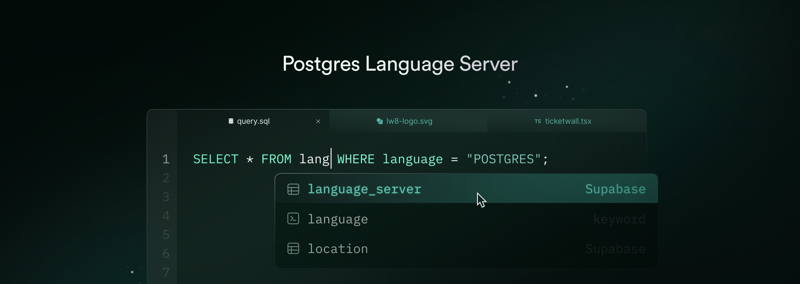

Postgres Language Server
A collection of language tools and a Language Server Protocol (LSP) implementation for Postgres, focusing on developer experience and reliable SQL tooling.
Source Code: https://github.com/supabase-community/postgres-language-server
The language server is built on Postgres' own parser libpg_query to ensure 100% syntax compatibility. It uses a Server-Client architecture and is a transport-agnostic. This means all features can be accessed through the Language Server Protocol as well as a CLI.
The following features are available today:
For future plans and opportunities to contribute, please check out the issues and discussions. Any contributions are welcome!